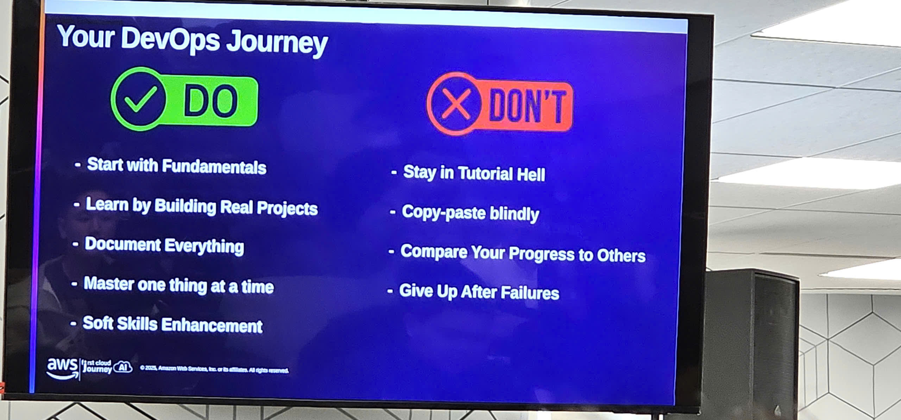
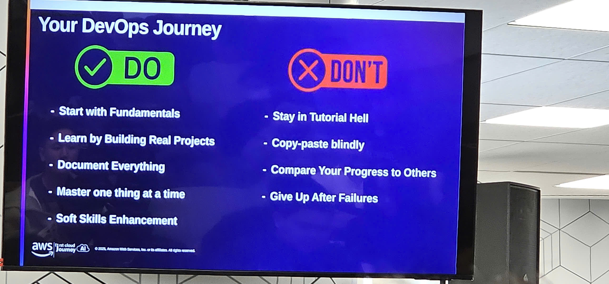

Event 1
Reflection Report – “AWS Mastery #2 – CloudFormation & CDK Workshop”
Purpose of the Event
The “AWS Mastery #2 – CloudFormation & CDK” workshop was designed to help participants:
- Understand the concepts and mindset behind Infrastructure as Code (IaC).
- Learn how AWS automates and manages infrastructure using CloudFormation and the AWS Cloud Development Kit (CDK).
- Gain a clearer picture of container technologies including Docker, Amazon ECS, Amazon EKS, and AWS App Runner.
- Strengthen DevOps thinking through automated deployments, reproducible environments, and scalable infrastructure.
- Observe hands-on demos to reinforce practical IaC implementation skills.
The workshop was extremely valuable for developers, cloud engineers, and DevOps professionals who want to automate and standardize AWS infrastructure.
Speakers
- Bao Huynh Thinh Nguyen – AWS Community Builder
- Vi Tran – AWS Community Builder
Both speakers have strong practical experience deploying real-world AWS systems, which made the workshop highly engaging and easy to follow.
Key Content
1. Infrastructure as Code (IaC) Mindset
The workshop began by analyzing why ClickOps (manually clicking on the AWS console) has significant drawbacks:
- Highly error-prone due to manual operations.
- Difficult to reproduce environments across teams.
- No unified change tracking or version control.
- Limited auditability and challenging rollbacks.
IaC was introduced as a modern DevOps foundation:
- Automation: Infrastructure is fully created and updated via code.
- Reproducibility: Identical environments can be provisioned consistently.
- Scalability: Infrastructure can be scaled quickly through versioned code.
- Collaboration: All changes can be tracked, reviewed, and audited via Git.
2. AWS CloudFormation – AWS Native IaC Tool
What is CloudFormation?
CloudFormation allows teams to define entire infrastructure stacks using YAML or JSON templates, and AWS will automatically build them.
CloudFormation Template Anatomy
-
Parameters
- Inputs used to customize deployments without changing the template.
-
Mappings
- Region-specific configurations such as AMI IDs.
-
Conditions
- Create resources only when certain conditions are met (e.g., only create EC2 for production).
-
Resources
- The core of every template. Defines S3, EC2, IAM roles, VPC components, etc.
-
Outputs
- Provide values for cross-stack referencing or sharing with other teams.
Drift Detection
- Detects whether resources have been modified outside of CloudFormation.
- Helps ensure that the actual environment matches the defined template.
The speakers provided clear visual examples of state mismatch, helping me understand the importance of drift management.
3. AWS CDK – Infrastructure Using Real Programming Languages
CDK was introduced as a higher-level, developer-friendly IaC framework:
- Supports TypeScript, Python, Java, Go, C#/.NET.
- CDK code is synthesized into CloudFormation templates (
cdk synth). - Enables abstraction, reuse, and scalable architectures.
Core Concepts
Constructs
- L1: Direct 1:1 mapping to CloudFormation resources.
- L2: Higher-level APIs with recommended default configurations.
- L3: Prebuilt architecture patterns, providing out-of-the-box solutions.
Stack & App Structure
- Stack: The unit of deployment.
- App: A collection of multiple stacks.
CDK CLI Commands
cdk init– Initialize a new projectcdk bootstrap– Prepare AWS environmentcdk synth– Generate CloudFormation templatecdk deploy– Deploy resourcescdk destroy– Remove stackscdk diff– Preview changescdk drift– Detect configuration drift
CDK significantly reduces manual configuration and improves infrastructure maintainability.
4. Docker & AWS Container Services
Docker Fundamentals
- Containers are lightweight and start much faster than VMs.
- Dockerfile defines the environment, dependencies, and build steps.
- Docker images act as blueprints for creating reproducible containers.
Amazon ECR
A secure, fully managed container registry that supports:
- Image scanning
- Immutable tags
- Lifecycle policies
- IAM-based access control
5. Orchestration with ECS, EKS, and App Runner
Amazon ECS
A fully managed, AWS-native orchestration service.
Supported launch types:
- EC2 launch type – More control, good for long-running workloads.
- Fargate launch type – Serverless compute, no server management.
Key components:
- Cluster
- Task Definition
- Service
Amazon EKS
Managed Kubernetes for complex or multi-cloud workloads.
- Automates Kubernetes control plane.
- Works with EC2, Fargate, or on-prem via Outposts.
AWS App Runner
A simple service to run web applications or APIs:
- Automatically builds from GitHub or ECR.
- No servers to manage.
- Ideal for small teams and rapid deployments.
What I Learned
1. Modern Infrastructure Thinking
- IaC is more than a tool—it is a standardized operational approach.
- Drift detection is essential in maintaining infrastructure reliability.
- Version-controlled infrastructure dramatically reduces risk.
2. Deep Understanding of IaC Tools
- I can now confidently read and write CloudFormation templates with all major components.
- CDK’s L2 and L3 constructs help reduce boilerplate and enforce best practices.
- Understanding the conversion process from CDK → CloudFormation is extremely valuable.
3. Container Architecture
- Clear distinction of when to use ECS, Fargate, or EKS.
- Improved ability to evaluate compute models based on cost, performance, and operational needs.
4. Practical DevOps Experience
cdk diffis a powerful safety tool before deploying to production.- IaC ensures that environments across teams remain consistent and reviewable.
- I now understand how CI/CD pipelines integrate with IaC and containers.
Application to My Work
- Begin migrating small infrastructure components to IaC using CloudFormation or CDK.
- Build practice templates for S3, IAM roles, and VPC components.
- Deploy a sample application using ECS Fargate to understand end-to-end workflows.
- Use CDK to design reusable infrastructure for internal projects.
- Recommend using ECR as the standard registry for container pipelines.
- Create internal documentation on using
cdk diffto enforce safe deployments.
Event Experience
- The workshop was well-structured, informative, and highly practical.
- Live demos gave me a clear understanding of how IaC works in real AWS environments.
- I particularly enjoyed the comparison between ECS and EKS—very helpful for architectural decisions.
- Networking with other participants expanded my understanding of real-world DevOps problems.
- The content has significantly increased my confidence in applying IaC and container orchestration in actual projects.
Event Photos
Event Photos


 


Overall, the workshop provided not only deep technical knowledge but also shaped my mindset toward modern cloud infrastructure, helping me approach future projects with more clarity and confidence.